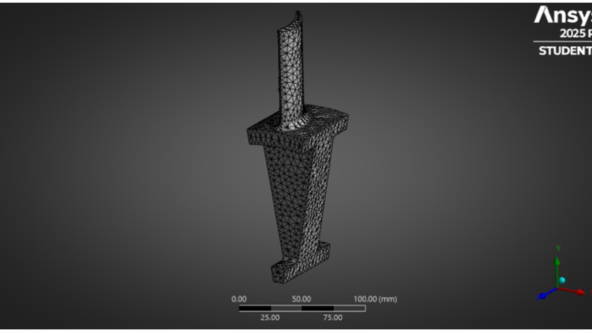
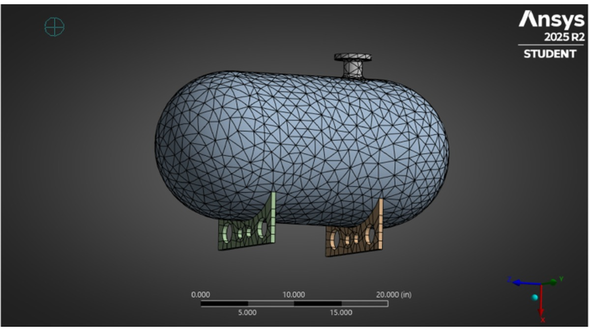

Finite element analysis
Ansys Analyses
Two simulation studies exploring dynamic and static structural behavior through meshing, boundary conditions, result interpretation, and convergence.


Rotating turbine
I modeled a turbine with 14,998 nodes and interpreted its mode shapes and harmonic indices. For the same mode, rotational prestress increased the natural frequency from 1085.3 Hz to 1098.7 Hz, consistent with the expected stiffening effect of rotation.
View report inline
Pressure vessel
I modeled the support constraints, a 75 lbm point mass representing the valve system, gravity, and internal pressure. The study compared deformation and von Mises stress, checked the support reaction for equilibrium, and evaluated mesh convergence. Total deformation converged more consistently than equivalent stress, which was more sensitive to mesh refinement.